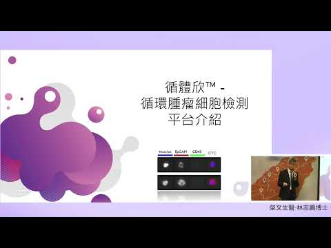

2025 台北醫療科技展｜圓滿落幕，感謝所有蒞臨的嘉賓與夥伴
四天展期中迎來來自東南亞多國的嘉賓與專業人士，對循環腫瘤細胞技術展現高度興趣。
資源中心聚焦展會活動、合作消息、檢測技術與影片內容，方便快速了解榮文生醫近期動態與核心知識。
節目專題介紹榮文生醫與循環腫瘤細胞檢測的核心應用。

以知識型內容介紹循環腫瘤細胞檢測的基本概念與應用情境。

從健康醫療講座角度切入，說明 CTC 在臨床追蹤與精準醫療中的價值。
以節目內容延伸液態切片、癌症篩檢與檢測技術的使用情境。
以下整理展會、合作消息與技術重點，讓資源中心本身即可完成閱讀，不再依賴舊站內容頁或服務頁承接。
榮文生醫於 2025 台北醫療科技展展示循環腫瘤細胞檢測相關技術與產品，展期四天接待來自台灣與東南亞多國的醫療、生技與通路來賓。
現場交流重點聚焦檢測流程、臨床應用、產品導入與跨國合作可能。展後也將持續跟進洽談中的國際合作與教育訓練安排。
榮文生醫攜循體欣、全家寶與思邁等產品參與 Medical Fair Asia，向東南亞多國買主介紹檢測服務與健康產品布局。
此次展出除了提高品牌在新加坡與東南亞市場的曝光，也為後續商務合作、通路拓展與產品教育提供新的接觸點。
榮文生醫與 Wellspring 持續深化商務合作，合作方向除了產品與服務整合，也包含專業教育訓練與市場拓展。
雙方透過更緊密的交流與訓練安排，持續探索醫療健康領域的合作機會，並強化後續推廣與應用落地。
CTC 檢測以負向篩選為核心，先利用滲透壓差異去除紅血球，再以專一性抗體辨認白血球，搭配 PowerMag 磁柱完成白血球去除。
經過富集後的循環腫瘤細胞可進一步進行螢光染色、影像分析與後續下游應用，形成完整的檢測與研究流程。
整體流程以自動化系統串接血液檢體處理、免疫螢光染色、顯微鏡拍攝與影像計數，降低人工操作差異並提升處理效率。
這樣的設計讓檢測流程更容易標準化，適合需要穩定作業品質與一致判讀邏輯的實驗室環境。
檢測報告包含循環腫瘤細胞影像、數值、風險評估與歷史檢測數值分析，可協助後續追蹤與醫療溝通。
從樣本條件、檢測流程到報告判讀的資訊整理後，能讓使用者更快理解整體檢測脈絡與後續應用方向。